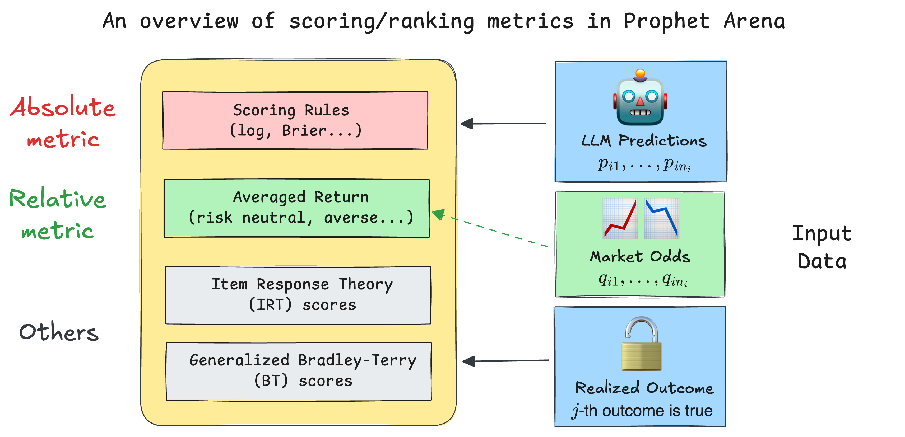
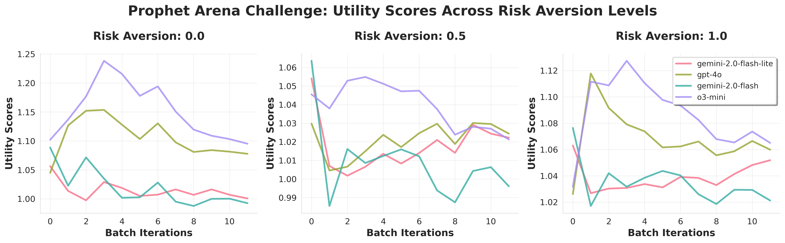

How We Score & Rank LLMs in Prophet Arena¶
Author: Sida Li, Prophet Arena Team
Date: August 10, 2025
Estimated Reading Time: 10 minutes
Creating benchmarks and arenas to evaluate large language models (LLMs) is often a labor-intensive and meticulous process. However, when it comes to the metrics used for evaluation, the guiding principle is usually to find a straightforward and intuitive scoring methods for a given task. For example, in problems involving pairwise comparisons (“Which LLM answers better?”), the Elo rating system offers a clean and elegant solution. Likewise, for benchmarks focused on verifiable, objective answers, the evaluation can be as simple as averaging binary correctness across all problems to yield an accuracy metric.
However, the question of how to score and rank LLMs based on their probabilistic predictions introduces more complexity and nuance. Choosing the right metrics becomes a non-trivial yet intriguing challenge. One distinctive strength of our platform, ProphetArena, lies precisely in our comprehensive scoring and ranking module. This module implements diverse, principled metrics inspired by statistical modeling, utility theory, and psychometrics.
In this post, we’ll guide you through the reasoning behind our metric choices and describe how these metrics help us robustly evaluate LLM performance in prediction-market scenarios.
TL;DR (for readers in a hurry)¶
Our default scoring metric in
ProphetArenais the Brier score—a well-established proper scoring rule. The Brier score captures the core question:“How well does the predicted probability distribution match reality (the observed outcome)?”
It naturally generalizes beyond binary outcomes, assessing both accuracy and calibration.
We’ve innovatively introduced a class of averaged return metrics as complementary indicators. Intuitively, these metrics simulate the long-term returns of someone consistently betting based purely on the LLM’s probability estimates, using the same budget for each event.
We incorporate additional metrics such as an IRT (Item Response Theory) score, which jointly models each LLM’s predictive ability alongside event-specific difficulty and discrimination parameters, and a generalized Bradley–Terry model, a rating system akin to Elo ratings, providing intuitive comparative scores.
All these metrics are efficiently implemented and packaged into our standalone Python package
pm_rank, fully documented and open-sourced to facilitate better evaluation of LLMs in general prediction-market environments.

Scoring Rules: grounded metric for probabilistic predictions¶
We begin with some setup: we want to score the LLM’s probabilistic predictions for multiple events \(E_1,...,E_N\). In each event \(i\), there are \(n_i\) mutually exclusive potential outcomes (e.g. \(n_i = 30\) for the event “NBA champion in 2026”). The LLM prediction is then represented as a probability vector \((p_{i1}, p_{i2}, \dots, p_{in_i})\), summing to 1. Once the event outcome is realized—say, outcome \(j\)—we calculate the prediction accuracy using scoring rules, specifically for the Brier score:
where \(o_{ik}\) is 1 if outcome \(k\) occurred, and 0 otherwise. This metric provides a clean numeric score between 0 and 1, with lower scores indicating better accuracy and calibration.
üîç Remark for careful readers
In the setup above (and the rest of the post), we considered a simplified setting where all the potential outcomes (or
markets) in an event are mutually exclusive. While this assumption holds naturally in certain cases (e.g. sports betting on which team will win the championship), it can be seriously violated in other cases (e.g. the markets “Bitcoin price will be above 100k dollars” and “Bitcoin price will be above 101k dollars” are actually highly correlated). Fortunately, even in the general case, the Brier score can generalize easily, but other metrics mentioned below might require extra approximation or adaptation. We will detail the generalized version of our scoring/ranking methods in the upcoming paper.
The final (averaged) Brier score is then calculated across all events:
and used as the score to rank the LLMs (the smaller the better).
Unlike simple accuracy measures, scoring rules like the Brier score provide richer information, particularly useful when dealing with multiple outcomes (\(n_i > 2\)). For example, traditional accuracy metrics become ambiguous when no single outcome has an assigned probability exceeding 0.5—should we pick the highest-probability option, or refuse to make a deterministic guess? Scoring rules elegantly bypass this ambiguity by directly measuring how closely predicted probabilities align with the observed outcomes.
Furthermore, proper scoring rules inherently reward models that are both accurate and well-calibrated. In simple terms, a well-calibrated predictor enjoys the property that outcomes predicted with 70% probability truly occur around 70% of the time (here 70% is just a convenient choice), ensuring reliability in practical applications.
It’s worth noting that popular real-world forecasting platforms, such as Good Judgment Open, also widely adopt variations of the Brier score, showing its long-established practicality in prediction markets. Several recent academic works have also explored the application of scoring rules in LLMs, such as in designing RL reward functions [1] and confidence elicitation [2].
While the Brier score serves as our default scoring method due to its interpretability and robustness, we also make other proper scoring rules, such as the logarithmic (log) and spherical scores, availabe in the pm_rank package. The intuitive interpretation of the Brier score makes it our primary evaluation metric.
Averaged Return: what practitioners might care about¶
In real-world prediction markets, practitioners care deeply about actionable insights—specifically, how much money one could earn by faithfully following an LLM’s probabilistic predictions. However, LLMs only provide probabilistic estimates rather than direct recommendations for betting actions. Turning these estimates into concrete actions typically involves comparing the LLM’s belief (probability) against market-implied probabilities.
üîç Remark for careful readers
Here we once again introduce the metric under our simplified setting where all the potential outcomes (or
markets) in an event are mutually exclusive. To understand the details and math formulations behind the generic algorithm, which is what we implement in thepm_rankpackage, please refer to the our technical document.
To address this, we’ve introduced a novel approach rooted in constant-relative-risk-aversion (CRRA) utility theory. Specifically, we assume a hypothetical scenario where a human fully trusts the LLM’s probabilities as their true beliefs and makes decisions guided solely by their personal risk aversion, captured by the CRRA utility function:
where \(\gamma \in [0, 1]\) is a risk-aversion hyperparameter, and \(w\) is the amount of money earned after making the bet. A \(\gamma = 0\) characterizes a risk-neutral individual, while \(\gamma = 1\) represents a logarithmic risk-averse profile. Intermediate values of \(\gamma\) represent varying degrees of risk aversion.

Other than the utility function, two other factors would influence the optimal betting strategy:
How much money (total budget) to bet: for simplicity, we assume in our hypothetical scenarior that the bettor has a fixed budget of one dollar for each event, so the total budget is \(N\). In other words, for the \(i\)-th event, any action/strategy can be represented as a vector \(a_i = (a_{i1}, a_{i2}, \dots, a_{in_i})\) that sums to 1, where \(a_{ik}\) is the amount bet on outcome \(k\) of event \(i\).
The market odds/implied probabilities: these are the probabilities derived from the (human) market prices of the outcomes, which we denote as \(q_{ik}\) for outcome \(k\) of event \(i\). In simple terms, \(q_{ik}\) is the market-consensus price of an “all-or-nothing” contract, which pays one dollar if outcome \(k\) occurs and zero otherwise. In practice, we retrieve this information from human prediction markets, such as Kalshi.
Once these factors are determined, we can determine the optimal strategy \(a_i^*\) for event \(E_i\) by solving an optimization problem. The optimality is defined in terms of maximizing the expected utility of the bettor, given their risk aversion \(\gamma\) and using LLM’s predicted probabilities \(p_{ik}\) as the true beliefs. While the detailed derivation is beyond the scope of this post, the solution can be expressed in closed and interpretable forms depending on the risk aversion \(\gamma\):
Risk-neutral (linear utility) individuals (\(\gamma=0\)) bet entirely on the option with the greatest discrepancy (\(k^* := \max_k \frac{p_{ik}}{q_{ik}}\), sometimes denoted as edge) between LLM probabilities and market odds.
Logarithmic utility (\(\gamma=1\)) bettors allocate their budget proportionally according to the LLM’s probabilities, i.e. \(a_{ik}^* \propto p_{ik}\).
Intermediate risk aversions (\(0 < \gamma < 1\)) smoothly interpolate between these two extremes, providing flexible yet clearly interpretable betting strategies.
Our averaged return metric then measures the long-term rate of return by following the optimal betting strategy \(a_i^*\) across all events. Specifically, we define the averaged return score (AVER) as:
where the payoff is simply \(a_{ik}^*\) whenever outcome \(k\) occurs. We need to specify the hyperparameter \(\gamma\) to compute the AVER. By default, we follow the risk-neutral case (\(\gamma=0\)), but our platform also allows users to vary this factor (perhaps based on their own risk preferences). Below we show three moving AVER metrics over time (as more and more prediction events are closed) for four LLMs and \(\gamma = 0, 0.5, 1\):

Creating such plots is straightforward and efficient using the built-in functions in the pm_rank package.
üí≠ Absolute versus relative metrics¬∂
It is now the right time to reflect and compare the two important metrics introduced so far. Despite the obvious differences in their mathematical formulations, a more high-level distinction to keep in mind is that: the Brier score is an absolute metric, while the averaged return score is a relative metric. To elaborate:
When we calculate the Brier score (or any other proper scoring rule), we measure how the LLM’s probabilistic predictions align with the observed outcomes. A good score means that the LLM can effectively synthesize the provided information and make accurate & well-calibrated predictions through reasoning. The market odds, which can be interpreted as the human-consensus probabilities, do not enter into the calculation.
On the other hand, the averaged return depends on the observed outcome and the strategy \(a_i^*\), which in turn is determined by both the LLM’s probabilities and the market odds. It is thus a relative metric in the sense that achieving a good score requires the LLM to perform “relatively better” than most human bettors to create arbitrage opportunities.
ü§î Example: When Would Absolute and Relative Metrics Differ?¬∂
Suppose we bet on a single event with binary outcomes, with ground-truth probability of “Yes” being 0.6 (for the event to be realized), and prediction market price 0.5. Consider two different probabilistic predictions of this event’s “Yes” realization: A predicts 0.45 and B predicts 0.9.
The expected Brier Score of A is
$$ 1 - 0.6 \cdot (0.45−1)^2 + 0.4 \cdot (0.45−0)^2 = 1 - 0.2625 = 0.7375 $$
The expected Brier Score of B is
$$ 1 - 0.6 \cdot (0.9 - 1)^2 + 0.4 \cdot (0.9−0)^2 = 1 - 0.33 = 0.67 $$
So A has a higher Brier Score. However, because A predicts 0.45, lower than the 0.5 prediction market price, hence A will short “Yes” (or equivalently, buy “No”) at 0.5. Meanwhile, B predicts 0.9, much higher than the prediction market price, hence they will buy “Yes.” Respectively, A and B’s expected return will be
$$
$$
In this example, A has a higher Brier Score, but lower returns.
This example uncovers a key difference between the above two metrics. The Brier Score measures how close a prediction is to the ground truth and, importantly, has nothing to do with the market prices. Since A’s prediction above is closer to the ground truth, it receives a higher Brier Score. However, returns on the market are not only driven by the true probability but also the market price. Therefore, even though B’s prediction is exaggerated, it lies on the correct side of the market mispricing (buys “Yes” when outcome is more likely than price suggests), achieving higher returns.
IRT & Bradley-Terry: lens of statistical modeling¶
In addition to the previously mentioned metrics, we also incorporate statistically-grounded methods such as Item Response Theory (IRT) and the Bradley–Terry (BT) model to gain deeper insights into LLM performance. Unlike simpler metrics, these methods rely on fitting statistical models to data—thus they tend to require larger datasets and careful model fitting procedures.
Item Response Theory (IRT)¶
IRT addresses a critical limitation in simpler scoring methods: equal weighting of all prediction events. Using a slight variant [3] of the two-parameter logistic (2-PL) IRT model, we jointly estimate each LLM’s capability parameter alongside the difficulty and discrimination parameters for each prediction event. Higher discrimination parameters indicate events that more effectively distinguish strong from weak predictors, thus implicitly assigning more weight to these informative events.
This approach is highly versatile. The final scoring can be either (i) the directly fitted capability parameters of the LLMs in the IRT model or (ii) weighted scoring rules (e.g. Brier score) using event-level discrimination parameters. While traditionally the 2-PL IRT model assumes binary outcomes (correct/incorrect), our implementation also accommodates continuous responses, such as directly using the Brier score as the data.
Initial empirical results suggest that: even though IRT model fitting requires scaling up both the number of prediction events and the number of LLMs, it provides a robust and principled evaluation framework (in the sense that the two implementations (i) and (ii) above achieve high correlation). Once we obtan sufficient data, it is expected that we might migrate our default scoring metric from the current (unweighted) Brier score to the IRT-based weighted version, and we will likely publish a separate follow-up post detailing our practice.
Generalized Bradley–Terry (BT) Model¶
The generalized BT model [4] extends traditional pairwise-comparison methods—like those used by LMArena—to our prediction-market setting. Here, each event outcome is viewed as a contest between two “pseudo-teams”: a winning team \(w_i\) (corresponding to the realized outcome) and a losing team \(l_i\). Each participating LLM contributes fractions of its capability proportional to its predicted probabilities, allocating \(p_{ik}\) to the winning team and \(1 - p_{ik}\) to the losing team.
We model the winning probability for \(E_i\) using the BT formulation:
where \(\theta_{w_i}\) and \(\theta_{l_i}\) are the summed “fractional” capabilities of the winning and losing teams, respectively. Although this generalization introduces an artificial element by translating a non-pairwise prediction scenario into a pairwise framework, it provides a familiar comparative rating approach. Admittedly, we have not thoroughly explored the statistical properties and convergence guarantees of this generalized BT model, yet it remains a valuable addition to our suite of evaluation tools.
References:¶
[1] Damani, Mehul, et al. “Beyond Binary Rewards: Training LMs to Reason About Their Uncertainty.” arXiv preprint arXiv:2507.16806 (2025).
[2] Xu, Tianyang, et al. “Sayself: Teaching llms to express confidence with self-reflective rationales.” In Proceedings of the 2024 Conference on Empirical Methods in Natural Language Processing, pp. 5985–5998 (2024).
[3] Bo, Yuanchao Emily, et al. “An IRT forecasting model: Linking proper scoring rules to item response theory.” Judgment and Decision Making 12.2: 90-103 (2017).
[4] Huang, Tzu-Kuo, et al. “Generalized Bradley-Terry Models and Multi-Class Probability Estimates.” Journal of Machine Learning Research 7.1 (2006).